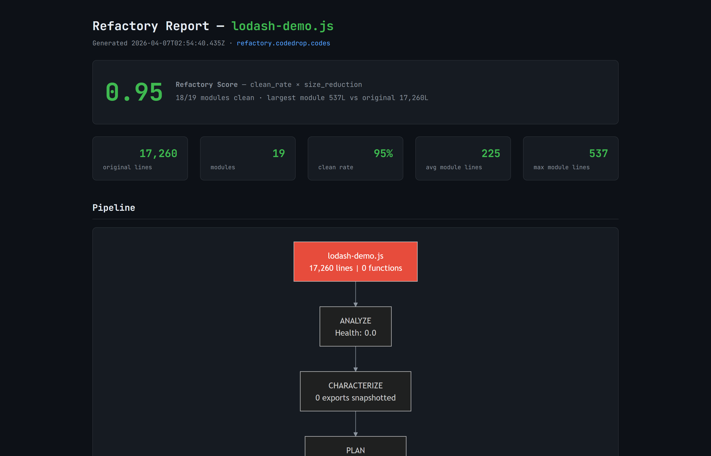

The 7-Step Pipeline
Refactory decomposes monoliths in seven distinct phases. AI handles one step (planning). The other 6 are purely deterministic—instant, reproducible, and $0 in API tokens.
Analyze
Scans the source file using ast-grep to assess health, cyclomatic complexity, and coupling. Produces a detailed function map and decomposition recommendation.
Characterize
Creates a Golden Snapshot of every export and its type signature. Generates a node:test file to catch behavioral regression during the refactor.
Plan
Sends a compressed function map (not full source) to the LLM. AI decides module boundaries and inter-module dependencies with 10x token efficiency.
Extract
Handles the routine 80%. Deterministically copies code by line range for JS/Python, keeping the AI focused on the parts that need judgment. LLM handles complex cases and other languages.
Fix Imports
Automatically rewrites require() and import paths across the entire project to point to the new modular structure. No broken links.
Verify
Runs syntax checks and load-tests on every new module. Compares the final export surface against the Golden Snapshot from Step 2 to guarantee parity.
Visual Extraction Reports
Every decomposition generates a comprehensive HTML report. Track your Refactory Score, view Mermaid dependency graphs, and verify syntax status at a glance.
